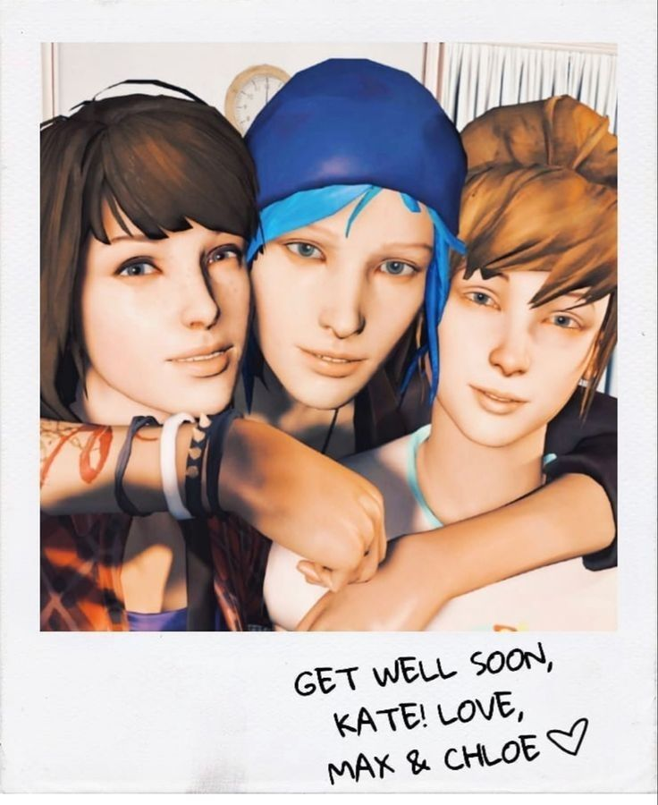
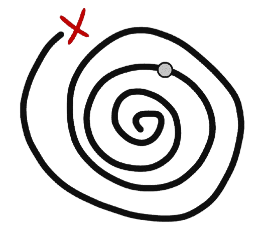
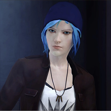
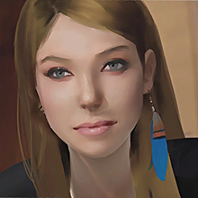
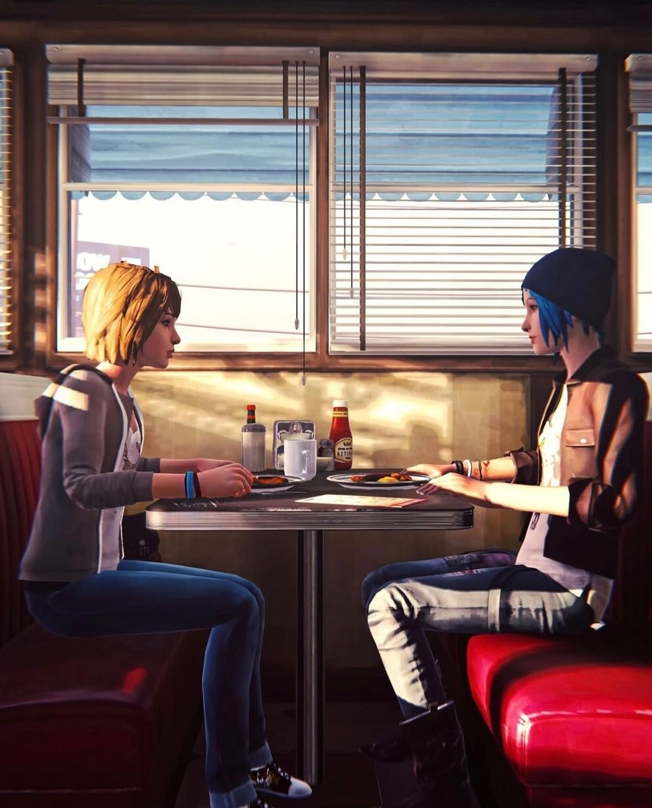

Max Caulfield é uma estudante de fotografia que descobre o poder de voltar no tempo.
Mark Jefferson é um professor renomado da Blackwell Academy.

Chloe Price é a melhor amiga de Max, conhecida por sua personalidade rebelde.

Rachel Amber era uma estudante popular e misteriosa em Arcadia Bay.
